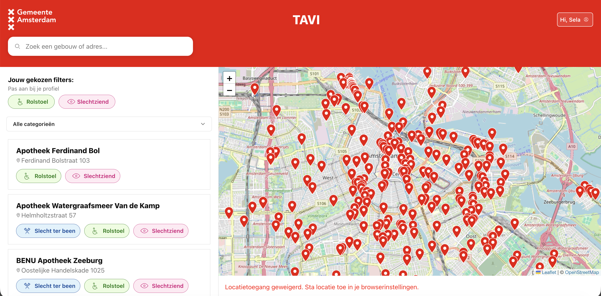
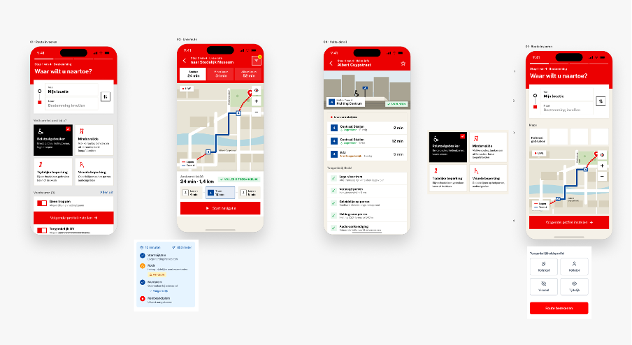
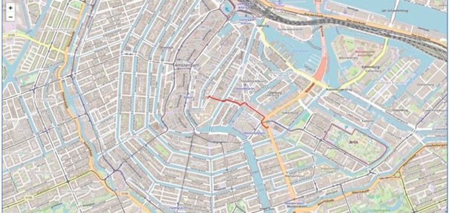
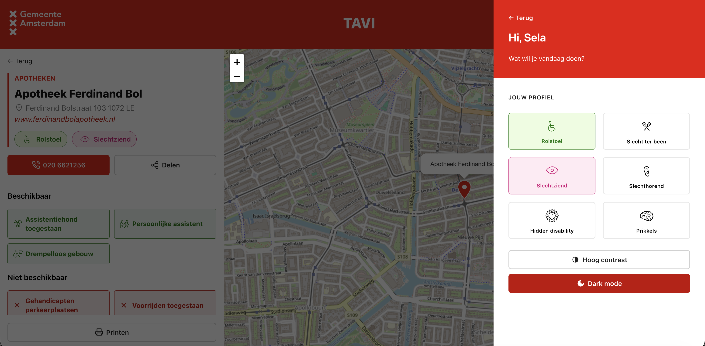
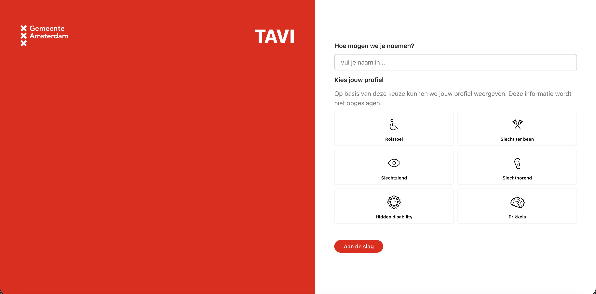

Project 08: TAVI, Toegankelijk Amsterdam Voor Iedereen
Project omschrijving
Voor mijn meesterproef heb ik samen met Xavannah, Louise en Luna Jay in opdracht van de Gemeente Amsterdam (Niels van Leenen en Gizing Khalandi) gewerkt aan TAVI: een webapplicatie die mensen met een fysieke beperking of andere toegankelijkheidsbehoeften helpt om toegankelijke gebouwen in Amsterdam te vinden. Coach: Victor.
Het concept is gedurende het project flink veranderd. We begonnen met een routeplanner, maar na feedback van de opdrachtgever verschoof de focus naar het tonen en filteren van toegankelijke locaties op een kaart. De app is uiteindelijk gebouwd met Astro, Leaflet, de Geolocation API en een database van de Gemeente Amsterdam.
Plannen, ontwikkelingen en reflecties
Week 1: Het project begrijpen en de opdrachtgever ontmoeten
Eerlijk gezegd had ik dit project niet in mijn top 3 keuzes staan, wat het in het begin lastig maakte om me er volledig in te gooien. Ik heb die eerste dagen de opdracht goed proberen te begrijpen en vragen voorbereid voor de opdrachtgever. We hadden ook een eerste coachingsgesprek met Victor bij de Voorhoede, wat hielp om richting te geven. In het eerste gesprek met Niels van Leenen nam ik de aantekeningen, wat voor mij een goede manier was om alles te verwerken en te begrijpen wat er precies verwacht werd.
Wireframes en inspiratie
We zijn allemaal gelijk begonnen met het maken van wireframes. Om inspiratie op te doen heb ik gekeken naar bestaande routeplanners en kaartapplicaties: 9292, NS, Apple Maps en Google Maps. Wat me opviel was hoe zij de zoekbalk, de kaart en de routeinformatie ten opzichte van elkaar positioneren. Die hiërarchie heb ik meegenomen in mijn eigen schetsen.
Toelichting op de wireframes
De wireframes zijn opgezet als een flow van vier stappen:
Stap 1, route invoeren: de gebruiker vult een vertrekpunt en bestemming in. Opgeslagen adressen en suggesties in de buurt maken dit sneller en laagdrempeliger.
Stap 2, profiel en filters: de gebruiker kiest een profiel dat bij zijn situatie past, zoals rolstoelgebruiker, mindervalide of tijdelijke beperking. Daaronder kan hij extra voorkeuren instellen zoals geen trappen, brede paden of toegankelijk OV.
Stap 3, live route: de route wordt getoond op een kaart, met verschillende opties (snelste, minst lopen, alleen lopen). Onderaan is direct te zien hoe lang de reis duurt en of de route volledig toegankelijk is.
Stap 4, halte-detail: per halte of locatie is gedetailleerde toegankelijkheidsinformatie te zien, zoals of er een lage-vloer tram is, een verlaagd perron of een geleidingslijn.
De keuze om het als een stappenflow te ontwerpen was bewust: door de gebruiker niet meteen te overweldigen met alle opties, maar hem stap voor stap te begeleiden, wordt de app toegankelijker, ook in de manier waarop je hem gebruikt.
Van styling naar JavaScript
We hebben het project opgezet met Astro-componenten, op basis van workshops die Jad en Louise hadden gevolgd. Ik heb mijn Figma-bestand gedeeld zodat we gezamenlijk het ontwerp konden aanpassen en verfijnen.
In eerste instantie pakte ik de styling van dit project op, maar ik realiseerde me dat een van mijn leerdoelen juist JavaScript is. Ik heb bewust de keuze gemaakt om van taak te wisselen met Louise. Zij nam de styling over, ik ging aan de slag met JavaScript.
Ik ben begonnen met Leaflet, een open-source bibliotheek voor interactieve kaarten. Ik had hier nog nooit mee gewerkt en ben gestart met de officiële quickstart tutorial. Stap voor stap heb ik de kaart werkend gekregen en daarna markers toegevoegd. Daarna heb ik een route ingeladen via OpenRouteService op basis van coördinaten. Dit kostte meer tijd dan verwacht, maar aan het einde stond er iets op het scherm. De kaart was nog lang niet gestyled, maar het werkte.
Eerste presentatie en feedback
Aan het einde van de week hebben we een presentatie gegeven bij een gebouw van de gemeente. De opdrachtgevers waren positief over de styling, maar wilden het concept aanpassen: de route moest een lagere prioriteit krijgen en de focus moest verschuiven naar de toegankelijkheid van gebouwen zelf. Een grote bijstelling, die betekende dat we de week erna ons hele concept moesten aanpassen.
Week 2: Concept opnieuw uitwerken
Aan het begin van de week heb ik meegewerkt aan het bijstellen van het concept en het bijwerken van de designrationale. We hadden ook een coachsessie met Victor, die ons hielp om even een stapje terug te doen en het grotere plaatje te zien.
Geolocation API implementeren
Ik heb deze week de Geolocation API geïmplementeerd om de huidige locatie van de gebruiker op de kaart te tonen. Ik wist in grote lijnen hoe het moest werken, maar de implementatie in ons project vroeg wat uitzoekwerk. Uiteindelijk heb ik het werkend gekregen met behulp van de MDN-documentatie.
Ik ben ook begonnen met de zoekbalk, maar kreeg dit niet helemaal af binnen de week. Aan het einde begreep ik wel hoe de logica werkte, wat genoeg vertrouwen gaf om de volgende week verder te gaan.
Aan het einde van de week hadden we een online meeting met de gemeente, waarbij we ons bijgestelde concept en prototype lieten zien.
Week 3: Profiel, responsive design en extra functies
Profielfunctie met localStorage
Deze week heb ik een profielfunctie gebouwd. De gedachte was: voordat de gebruiker de kaart ziet, vult hij eerst zijn naam in en kiest hij zijn beperking. Deze feedback hebben we vanuit de opdrachtgever doorgekregen. Die informatie wordt opgeslagen in localStorage, zodat het ook op de volgende pagina's beschikbaar is en de gebruiker persoonlijk aangesproken wordt.
Dit was de eerste keer dat ik localStorage zelf implementeerde. Het vroeg wat uitzoekwerk om de data goed op te slaan en weer op te halen, maar uiteindelijk werkte het.
Responsive design, printfunctie en favicon
Ik heb de website responsive gemaakt met behulp van clamp() in CSS, zodat tekst en elementen vloeiend meeschalen tussen schermformaten. Ook heb ik een desktopversie opgezet, een printfunctie en een deelfunctie toegevoegd en de favicon en naam van de app uitgewerkt.
Het afronden van de responsiveness voor grotere schermen kostte meer tijd dan gepland, omdat ik veel merge conflicten moest oplossen in Git. Meerdere mensen werkten tegelijk aan dezelfde bestanden, wat steeds tot botsingen leidde. Frustrerend, maar ik heb er wel van geleerd hoe je conflicten systematisch aanpakt en hoe belangrijk goede afspraken zijn over wie aan welk bestand werkt.
Week 4 & 5: Profiel verfijnen en toegankelijkheid
Profiel aanpassen op basis van feedback
Deze week heb ik verder gewerkt aan de profieloverlay. We kregen als feedback dat het er anders uit moest zien, onder andere moest de stippellijn een harde lijn worden. Ik heb die aanpassingen doorgevoerd en daarna opnieuw gekeken of het geheel klopte. Nu kan de gebruiker in het profiel aanpassen voor welke beperking ze willen filteren en het contrast en dark-light mode aanpassen.
Toegankelijkheid verbeteren (WCAG)
Een groot deel van deze week heb ik besteed aan het toegankelijker maken van de applicatie. Per aanpassing heb ik gekeken welke WCAG-richtlijn erbij hoorde en waarom de aanpassing nodig was.
- Taal van de pagina ingesteld (WCAG 3.1.1): ik heb
<html lang="en">aangepast naar<html lang="nl">in alle drie de pagina's. Dit klinkt klein, maar het zorgt ervoor dat schermlezers de tekst met de juiste Nederlandse uitspraak lezen. - Labels toegevoegd aan invoervelden (WCAG 1.3.1 / 4.1.2): het naamveld op de onboarding-pagina en het zoekveld hadden geen
<label>. Zonder label weet een schermlezer niet wat het veld betekent. Ik heb visueel verborgen labels toegevoegd met de classsr-only, zodat het ontwerp er niet door verandert maar de toegankelijkheid wel verbetert. - Profielknop van <div> naar <button> (WCAG 4.1.2): het klikbare profielicoon was een
<div>, wat niet toetsenbord-bedienbaar is. Ik heb dit vervangen door een<button>met de juiste ARIA-attributen:aria-label="Open profielmenu",aria-haspopup="dialog"enaria-expandeddie mee-update bij openen en sluiten. - Popup gemarkeerd als dialoogvenster (WCAG 4.1.2): de profielpopup heeft
role="dialog",aria-modal="true"enaria-labelledbygekregen. Zonder deze attributen begrijpt een schermlezer niet dat het om een apart modaal venster gaat. - Decoratieve SVG-iconen verborgen voor schermlezers (WCAG 1.1.1): alle puur decoratieve iconen hebben
aria-hidden="true"gekregen. Anders leest een schermlezer lege of verwarrende SVG-inhoud voor, wat de gebruikerservaring verslechtert. - <main> landmark toegevoegd (WCAG 1.3.1): de hoofdinhoud stond in een
<div>. Door dit te vervangen door<main>kunnen schermlezers en toetsenbordgebruikers direct naar de hoofdinhoud springen, zonder eerst alle navigatie te moeten doorlopen. - aria-label op locatielijst (WCAG 1.3.1): de sectie met locaties had geen toegankelijke naam. Door
aria-label="Locaties"toe te voegen kondigt de schermlezer de sectie correct aan. - aria-live op locatieteller (WCAG 4.1.3): de teller die het aantal gevonden locaties toont wordt dynamisch bijgewerkt via JavaScript. Zonder extra attribuut hoort een schermlezergebruiker die update niet. Door
aria-live="polite"toe te voegen worden wijzigingen automatisch voorgelezen zodra de gebruiker stopt met typen.
Afbeeldingen






Uitkomsten en inzichten
Voor de presentatie van ons eindproduct aan alle docenten en medestudenten heb ik een poster en sticker ontworpen. Voor de poster vond ik het belangrijk dat men wist waar TAVI over ging en hoe je het kon gebruiken. De stickers vonden we een leuke bijkomstigheid om uit te delen aan mensen en zo TAVI te verspreiden.
Tijdens de eindpresentatie met onze opdrachtgever waren ze heel tevreden over ons eindproduct. We kregen vrijwel nauwelijks feedback over verbeterpunten, maar vooral dat ze er heel blij mee waren en dat we trots mogen zijn op ons eindresultaat.